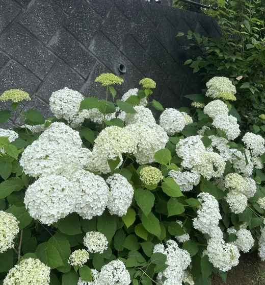
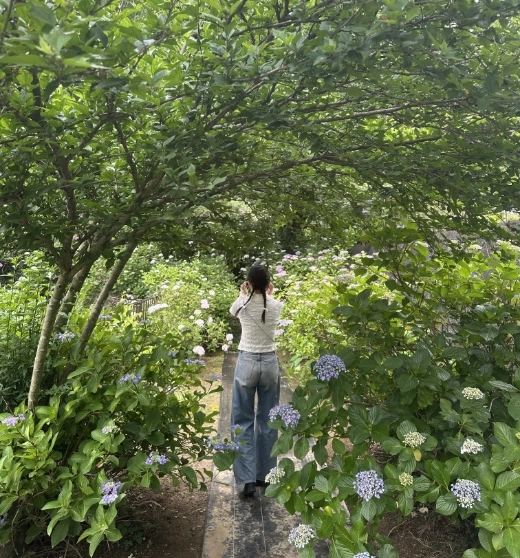
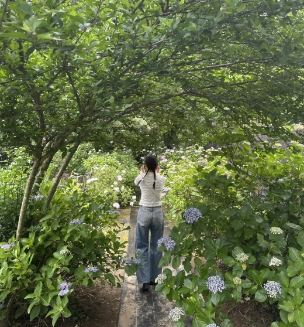
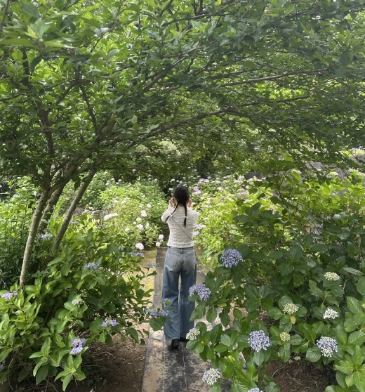

金泉寺（あじさい寺）
嵐山町にある金泉寺は、住職さんが長年手入れしてきた 約5,800株 のあじさいで知られています。
色も形もさまざまな 100種類以上 が、山道や参道をふんわりと紫と青に染める景色は圧巻。
私が訪れた日は小雨でしたが、しっとりとした空気に包まれた境内には特別な静けさがあり、あじさいの美しさがより引き立っていました。
見頃は6月下旬から7月中旬ごろ。雨の日ならではの風情を味わうのもおすすめです。

- 色イメージ
- 紫（#7e548c）
- 見頃
- 6月下旬〜7月中旬
- 住所
- 〒355-0206 埼玉県比企郡嵐山町越畑1122
- 営業時間
- 特になし
- 料金
- 参道散策無料
おすすめ撮影スポット
手前の花を大きく、本堂は背景でぼかす。

参道のカーブと紫陽花の列を歩く人と一緒に。
アクセス
- 電車
- 東武東上線「武蔵嵐山駅」
→・タクシー 約10分
・徒歩 5.3 km / 約1時間 - 車
- 関越自動車道 嵐山・小川 IC から約5分
ギャラリー


 



